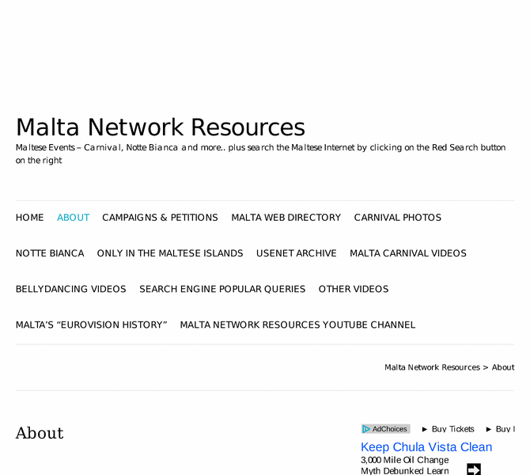

Previewing: Malta Network Resources Previewing: Malta Network Resources 
Use the left/right red arrow controls to navigate through this ring - Click the preview image to visit the member site.

Malta search engine, web directory, and a catholic site with news and another directory for catholic links.
Malta Network Resources owned by:
 cweb cweb
A member of the original webring since 02/11/2005.
|
|